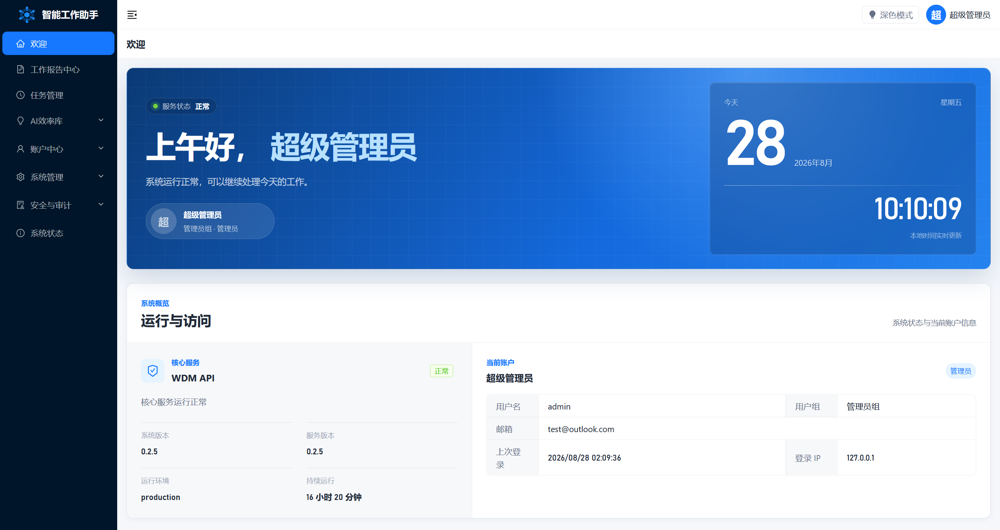
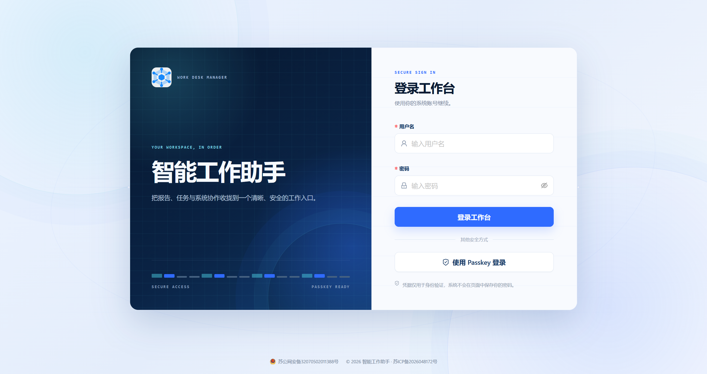

报告沉淀上下文
编写日报与周报，把分散的工作进展整理成可以回看、汇总和复用的组织记忆。
One workspace, one flow
WDM 不是把功能堆在一个后台里，而是让日常记录、可复用资产和自动执行彼此衔接。每一步都有权限边界，每一次动作都可以追溯。
编写日报与周报，把分散的工作进展整理成可以回看、汇总和复用的组织记忆。
统一管理提示词与脚本资产，并通过 nanobot 完成 AI 优化，让好方法不再停留在个人手里。
用计划触发业务、AI 或隔离脚本任务。调度、执行与状态彼此分离，运行更清晰，也更安全。
Product experience
下面的交互预览基于 WDM 的真实模块制作。切换模块，查看一套工作系统如何同时覆盖日常协作、自动化与治理。

WORK REPORT
AUTOMATION
AI ASSET LIBRARY
SECURITY & GOVERNANCE

支持账号密码与 Passkey 登录，让身份验证从进入系统的第一步就保持明确。
Clear by design
浏览器、API、数据库、AI 服务和脚本执行各守边界。WDM 只协调工作，不把模型管理、会话记忆或用户脚本混进业务进程。
统一入口、动态路由与清晰的数据呈现。
鉴权、业务语义与外部服务适配。
保存报告、任务、配置与审计记录。
管理模型、会话、工具与 Agent Loop。
在内部网络中无状态隔离执行脚本。
Start your workspace
WDM 使用 Docker Compose 组织 Web、API、Worker、MySQL 与隔离执行服务。配置环境变量后，即可启动完整工作台。
docker compose up -d